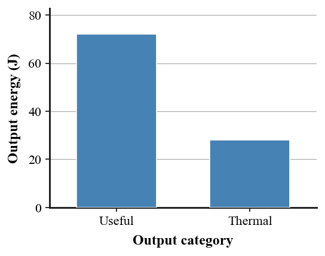

6. A device receives 100 J of energy and produces the outputs shown in the graph. Describe the useful and thermal outputs and explain why the graph is consistent with conservation.

7. Classify each as source, carrier, or transformation: sunlight; hydrogen in a tank; electrical energy in a wire; a turbine changing moving-water energy into electrical output. Explain two choices.
8. Use the hydrogen/fuel-cell image to trace at least three stages from an original energy input to electrical output, and explain why hydrogen is a carrier in this model.

9. A town is choosing between wind and natural-gas electricity. Name four evidence categories that should be compared and explain why one category alone is not enough.
10. A motor receives 500 J of electrical energy, produces 360 J of useful mechanical energy, and warms the surroundings. Determine the thermal/other energy that must be accounted for.